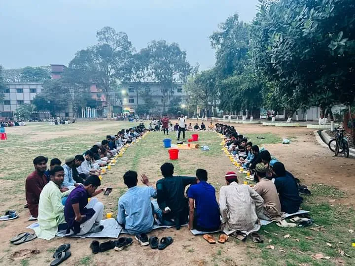
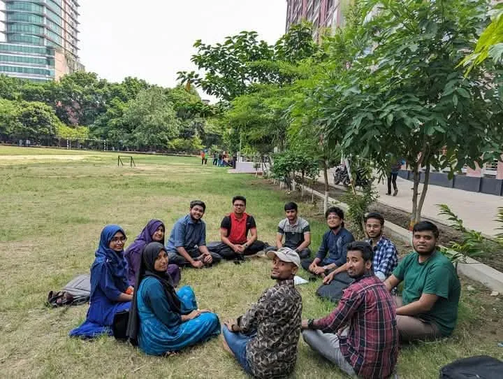

Photo gallery
30 photographs from fieldwork, classes, conferences, awards, club life and relief work. Each one links back to the page it belongs to.
Select a photograph to enlarge it, then use Next and Previous, or the arrow keys, to browse. The faces of patients and survey respondents are blurred, the names and faces of online-class participants are hidden, and phone and payment numbers are removed. If you appear in a photograph and would like it changed or removed, write by email. See Privacy and documents.
Research fieldwork and presentations · Teaching and training · Awards · Conferences and seminars · Clubs and campus life · Community service
Research fieldwork and presentations
Fieldwork for the road accident study and the college surveys, and the presentations that followed.
-

Bedside interview at the National Institute of Traumatology and Orthopaedic Rehabilitation (NITOR), Dhaka. Faces are blurred. Mar 2025 · Experience: road accident study -

Recording a patient’s answers on the study questionnaire at NITOR. Faces are blurred. Mar 2025 · Experience: road accident study -

Household interview in Mohakhali Korail Bosti. The respondent’s face is blurred. Mar 2025 · Experience: road accident study -

Recording household survey answers in Korail Bosti. One face is blurred. Mar 2025 · Experience: road accident study -

Questionnaire fieldwork on a government college campus in Dhaka. Projects: smartphone addiction -

Handing out and collecting questionnaires near a college gate. Projects: smartphone addiction -

Presenting survey findings to the faculty panel at the Data Analysis Capstone Project presentation, Govt. Titumir College Analytics Club. Projects: smartphone addiction -

Presenting the proposal on inflation and the 2023–24 national budget at Govt. Titumir College. Projects: inflation and the budget
Teaching and training
Classes and workshops in research methods, SPSS and economics.
-

Live SPSS data-analysis class at Sunaru Academy, 21 July 2026. The other participants are hidden. 21 Jul 2026 · Experience: Sunaru Academy -

Teaching an introduction to research, research gaps and title formulation at the Govt. Titumir College Research Club. Experience: GTCRC research instructor -

Giving hands-on SPSS instruction in a GTCRC data-analysis session. Experience: GTCRC research instructor -

Opening slide of a session on the basic idea of the economics department, organised by Rubel’s Economics Method. Experience: Rubel’s Economics Method -

Poster for the EMCRS Basic Data Analysis Course on SPSS, October 2026. Oct 2026 · Experience: EMCRS SPSS course
Awards
The Research Proposal Writing Contest of the Govt. Titumir College Research Club.
-

Receiving a Certificate of Achievement at the closing ceremony of GTCRC Research Fest 2.0 and the inauguration of the Research Methodology Course, 2025. 2025 · Honours: Research Proposal Writing Contest 2025 -

Winner announcement from the GTCRC: first position in the Proposal Writing Contest. Jul 2025 · Honours: Research Proposal Writing Contest 2025
Conferences and seminars
Events attended, newest first.
-

Presenting the smartphone-addiction study at the 3rd LURS Student Research Conference, Leading University, Sylhet. 1 Aug 2026 · Conferences: 3rd LURS Student Research Conference -

Receiving a certificate at the closing and prize-giving ceremony, 3rd LURS Student Research Conference. 1 Aug 2026 · Conferences: 3rd LURS Student Research Conference -

Participants at the Research Findings Dissemination Conference of the Tobacco Control Policy Research Grant Program 2025, CIRDAP International Conference Centre, Dhaka. Apr 2026 · Conferences: Tobacco Control Policy Research Grant Program -

At the BURS 1st National Youth Research Summit, 18 October 2025. 18 Oct 2025 · Conferences: BURS National Youth Research Summit -

The GTCRC stall at the RURS 1st International Student Conference and Research Fair 2024, organised by Rajshahi University Research Society. 22–23 Feb 2025 · Conferences: RURS International Student Conference -

Seminar hall at The Ultimate Guide for Global Job and Career Success, Govt. Titumir College Psychology Society. 22 Aug 2023 · Conferences: Global Job and Career Success seminar -

At the IGC Bangladesh Research and Policy Conference. 20 Jul 2023 · Conferences: IGC Bangladesh conference
Clubs and campus life
Student organisations at Govt. Titumir College.
-

Central committee poster of the 7 College Entrepreneur Forum. Leadership: 7 College Entrepreneur Forum -

Ramadan iftar gathering of the Department of Economics, Govt. Titumir College. Mar 2024 · Leadership: Ramadan iftar gathering -

Students holding certificates in a classroom, Govt. Titumir College Analytics Club. Leadership: Analytics Club -

Students meeting on a campus lawn in Dhaka.
Community service
Flood relief in Noakhali and a campus clean-up.
-

Relief distribution with Noakhali residents, flood relief 2024. Aug–Sep 2024 · Volunteering: flood relief -

Relief truck with the Students Against Discrimination team, flood relief 2024. Aug–Sep 2024 · Volunteering: flood relief -

Online appeal for flood relief, issued courtesy of the Noakhali District Students’ Welfare Council at Titumir. Contact and payment numbers are hidden. Aug–Sep 2024 · Volunteering: flood relief -

Volunteers at the campus clean-up programme, Govt. Titumir College. May 2023 · Volunteering: campus clean-up